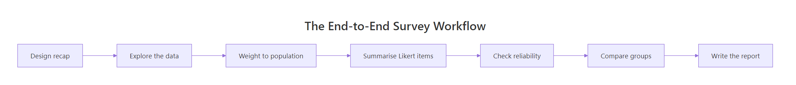
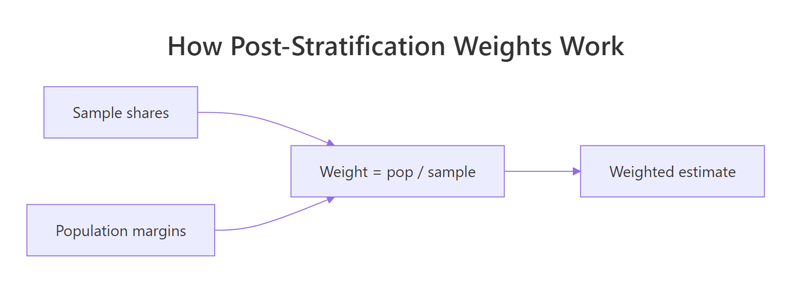
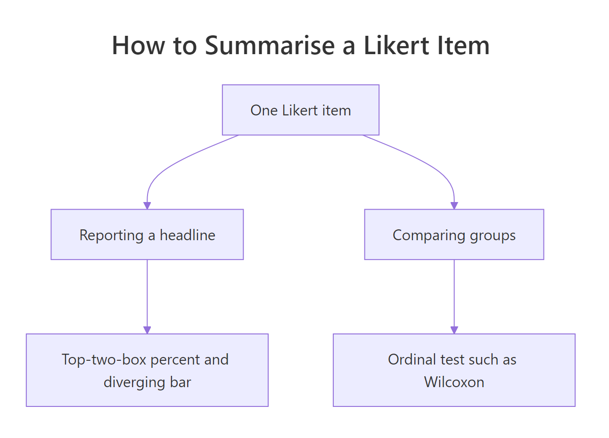

Capstone: A Survey Analysis End to End in R
A survey analysis is not one test, it is a pipeline. You recap the design, explore the responses, weight them so they reflect the real population, summarise Likert items without misleading anyone, check whether the scale holds together, compare groups with honest effect sizes, and hand a leader a report they can act on. This capstone walks the whole pipeline on one reproducible employee-engagement survey, and it builds the weights, the reliability score, and the effect sizes by hand so you can see exactly what each number means.
What did this survey measure, and who actually answered it?
Picture a company of 1,000 people. HR emails an engagement survey to everyone, and about 600 reply. That gap is the first trap of survey work: the people who reply are rarely a fair copy of the people who were asked. Before you analyze a single answer, you need to know who was invited, who answered, and how the two differ. We rebuild the whole survey from a known population so that every figure on this page is reproducible and you can trust where it came from. Everything here uses base R plus a little dplyr and tidyr, all stated as we go.
Start with the sampling frame: the full workforce, split by department, with the headcount HR keeps on file. These department counts are our known population margins, and they will matter a lot once we weight.
Engineering is 40% of the company, People (the HR team) just 5%. Hold onto those shares. If the survey respondents do not match them, our headline numbers will quietly tilt toward whichever department shows up the most.

Figure 1: The seven stages of an end-to-end survey analysis.
Now simulate who responded. In real life you cannot choose the response pattern, so we bake in a realistic one: engaged departments answer more often. Engineering and the People team reply at high rates, Sales replies at a low rate. We draw a yes/no response for every one of the 1,000 employees using each department's response probability.
609 people answered. The rbinom() call flips a weighted coin for each employee, with the weight set by their department's response rate. Because those rates differ, the mix of respondents is already skewed away from the true workforce, and we will measure exactly how much in a moment.
Next, give each respondent a work arrangement (on-site, hybrid, or remote) and their actual answers. Behind the scenes each person has a hidden level of engagement driven by their department and their work mode, and each of six survey questions turns that hidden level into a 1-to-5 rating with a little noise. You do not need to follow the simulation line by line; the point is that we now hold a realistic answer sheet whose truth we happen to know.
Each of the six columns valued, growth, recommend, manager, tools, and voice is one survey question answered on a 1-to-5 scale, where 1 means "strongly disagree" and 5 means "strongly agree". The respondent_id, department, and work_mode columns describe who gave each answer. That is 609 respondents and 9 columns, the shape of a real survey export.
Real surveys are never fully filled in: people skip questions. We add that too, with a bit more skipping on the manager item (people are cautious about rating their boss). This missingness is now part of the dataset we carry forward.
The data is ready. Before any statistics, one number decides how seriously to take the rest: the response rate, and how it varies by department.
The overall response rate is a healthy 60.9%, but the by-department rates tell the real story. Engineering answered at 77% and the People team at 84%, while Sales answered at only 39%. That gap in who chose to answer is the single most important fact in this dataset, and it is why a raw average will mislead us until we fix it.
Try it: Compute the response rate for the Support department on its own, straight from the invited and resp objects. The answer should be 51.0.
Click to reveal solution
Explanation: table(resp$department) counts responders per department and invited["Support"] is the headcount, so their ratio times 100 is the response rate. Support answered at 51%.
What do the raw responses look like before any modelling?
Exploration comes before inference. Before you weight, test, or model anything, look at the shape of every item and map where the data is missing. Two questions drive this stage: how did people answer each item, and where are the holes?
Start with the full distribution of each item. A mean hides the shape; a count of every response level shows it.
Each row is one item; the columns run from strongly disagree (SD) to strongly agree (SA). Already the items behave differently. manager and recommend lean positive (fat right side), while growth and voice lean negative (fat left side). A single average per item would flatten all of that into one number.
Speaking of which, here are those averages, plus the spread of each item.
The means range from 2.63 (growth) to 3.37 (manager), and every item has a standard deviation near 1.25, meaning opinions are genuinely spread out rather than clustered. We call these means "naive" for a reason: they ignore both the missing answers and the fact that some departments are over-represented. We will fix both.
First, the holes. A missingness map counts how many answers are absent for each item, so you know which numbers rest on thinner data.
The manager item is missing almost 10% of the time, more than any other, exactly the cautious pattern we built in. And though no single item is missing much, only 422 of 609 respondents answered all six. That gap matters later: any analysis that needs a complete row (like Cronbach's alpha) will run on 422 people, not 609.
mean(x, na.rm = TRUE) throws away the non-responders and treats an over-sampled Engineering as if it were the whole company. Both problems are fixable, but only once you have seen them in the map above.Try it: How many respondents answered all three of valued, manager, and voice? Use complete.cases() on just those columns.
Click to reveal solution
Explanation: With only three items in play, fewer rows contain an NA, so 495 respondents are complete here versus 422 across all six items. The more items you require, the more people you lose.
Why weight the results, and how do you build the weights by hand?
Here is the fix for the over-representation problem. Weighting nudges each respondent's contribution up or down so that the weighted sample matches the known workforce. It is the difference between "what the responders think" and "what the company thinks".
First, prove there is a problem. Compare each department's share of the actual workforce with its share of the respondents.
Engineering is 40% of the company but 51% of the respondents, while Sales is 25% of the company and only 16% of the respondents. The survey is over-weighted toward Engineering and under-weighted toward Sales, purely because of who replied. If Engineering and Sales feel differently about work, the raw average will drift toward Engineering's view.

Figure 2: A post-stratification weight is the population share divided by the sample share.
The fix, called post-stratification, is almost embarrassingly simple. For each department, the weight is the share it should have divided by the share it actually has.
$$w_d = \frac{N_d / N}{n_d / n}$$
Where:
- $N_d$ = the department's headcount in the workforce, and $N$ = the total workforce (1,000)
- $n_d$ = the department's respondents, and $n$ = the total respondents (609)
A department that is over-represented gets a weight below 1 (its voices count for less), and an under-represented department gets a weight above 1 (its voices count for more). Let us compute them.
Engineering's weight is 0.79 (dialled down) and Sales' is 1.57 (dialled up), exactly matching their over- and under-representation. Every respondent now carries their department's weight in a new weight column.
To use those weights, replace the plain average with a weighted average. A weighted mean multiplies each value by its weight, adds them up, and divides by the total weight.
$$\bar{y}_w = \frac{\sum_i w_i \, y_i}{\sum_i w_i}$$
Now build the engagement score (each person's average across the six items) and compare the raw average with the weighted one. Watch what happens to the headline number.
The raw engagement average is 3.00; the weighted average is 2.89. The share who would recommend the company drops from 43.8% to 40.4% once we account for who was really asked. The raw numbers flatter the company because the happiest departments answered the most. Weighting does not invent bad news; it just keeps the departments that answered most from counting for more than their share of the workforce.
Try it: Compute the weighted top-two-box (the share answering 4 or 5) for the manager item using the top2() helper and the weight column. The unweighted value is 46.2; the weighted value is lower.
Click to reveal solution
Explanation: The manager item drops from 46.2% to 42.5% agreement once weighted, the same downward correction we saw on engagement: the over-represented departments were the more positive ones.
How do you summarise Likert items without misleading anyone?
A Likert item (strongly disagree to strongly agree, scored 1 to 5) looks like a number, so people average it. Sometimes that is fine. Often it hides the very thing a leader needs to see. Before you report a single mean, you have to know when the mean lies.
Here is the classic trap, built from two imaginary teams answering one question.
Both teams average exactly 3.0, yet Team A is uniformly indifferent while Team B is violently split. A leader told "both teams scored 3" would miss a workforce on the edge of walking out. The mean is identical; the story is opposite. This is why a Likert summary needs the shape, not just the centre.

Figure 3: Pick the Likert summary that matches the question you are answering.
The figure names the two jobs a Likert summary can do. When you are reporting a headline, show the full distribution and a top-two-box percentage. When you are comparing groups, use an ordinal test (we get to that next section). For the headline, the distribution is best shown as a diverging stacked bar: disagreement grows to the left of centre, agreement grows to the right, and the neutral middle straddles zero. First compute the percentages by hand so you see what the chart is drawing.
Each row now sums to 100%. For growth, 48% disagree (23.2 + 24.9) and only 25% agree, a clearly negative item. For manager, 46% agree and 24% disagree, a clearly positive one. Those two totals, the agree side and the disagree side, are what the diverging bar draws. Here is the chart.
The bar sorts the items from most to least positive: manager and recommend sit at the top with long agree tails, growth and voice at the bottom with long disagree tails. A reader grasps the whole survey in one glance, something six separate means could never deliver. For an even shorter headline, most survey teams quote the top-two-box: the single percentage who chose 4 or 5.
Read that as "46% agree their manager supports them, but only 25% agree they have room to grow". Top-two-box is blunt (it ignores the difference between a 4 and a 5, and between a 1 and a 3), but it is the number executives remember, and paired with the diverging bar it is honest.
Try it: Compute the top-two-box for the tools item with top2(). It should come out to 30.6.
Click to reveal solution
Explanation: Only 30.6% of respondents chose 4 or 5 on "I have the tools I need", making it one of the weaker items and a candidate for the report's watch-list.
Do the six items hang together? Cronbach's alpha
We have been treating the six items as one engagement scale, averaging them into a single score. That only makes sense if the items actually measure the same underlying thing. If people who agree with one tend to agree with the others, the items are internally consistent, and Cronbach's alpha puts a number on that consistency, from 0 (unrelated) to 1 (perfectly redundant).
Alpha compares the spread of the total score against the spread of the individual items. When items move together, the total varies more than the items do on their own, and alpha climbs. We compute it by hand from the 422 complete cases.
$$\alpha = \frac{k}{k-1}\left(1 - \frac{\sum_{i=1}^{k} \sigma^2_i}{\sigma^2_{\text{total}}}\right)$$
Where $k$ is the number of items, $\sigma^2_i$ is the variance of item $i$, and $\sigma^2_{\text{total}}$ is the variance of each respondent's total score across the items.
Alpha is 0.91. As a rough guide, above 0.70 is usually called acceptable and above 0.80 good, so these six items clearly hang together as one engagement scale. That licenses the average we have been computing: it is measuring a single, coherent construct rather than six unrelated opinions.
A useful follow-up asks whether any single item is dragging the scale down. We recompute alpha six times, each time dropping one item, and see if the scale would improve without it.
Every value is below the full-scale 0.91, which means dropping any item makes the scale worse. No item is redundant here; each of the six adds to the scale's consistency. If one row had come back higher than 0.91, that item would be a candidate to cut.
Try it: Compute alpha for just the three items valued, manager, and voice, using their complete cases. It should be lower than the full-scale 0.91 (fewer items usually means lower alpha).
Click to reveal solution
Explanation: Three items give alpha 0.839, lower than the six-item 0.91. Alpha rewards more items, which is exactly why you should not compare alphas across scales of different lengths.
Which groups differ, and by how much?
The most common survey question is comparative: do remote workers feel differently from on-site workers? Answering it well means three things, not one. You need a test that fits ordinal data, an effect size that says how big the gap is, and a correction when you run many tests at once. We will do all three on the work-mode groups.
Start by looking before testing. Summarise engagement by work mode.
Remote workers average 3.44, on-site workers 2.70, with hybrid in between. That is a gap worth testing. Because Likert-based scores are ordinal and not perfectly normal, the safe omnibus test is Kruskal-Wallis (a rank-based cousin of one-way ANOVA), and for the sharpest single contrast, remote versus on-site, a Welch t-test gives us a confidence interval on the difference in means.
Kruskal-Wallis says the three groups are not interchangeable (p is about 4e-11). The focal contrast is sharper still: remote workers score 0.74 points higher than on-site workers on the 1-to-5 scale, and the 95% confidence interval runs from 0.55 to 0.93, comfortably clear of zero. The gap is real. But "real" is not "big", so quantify the size.
An effect size turns a difference into a standardized magnitude you can compare across studies. Cohen's d divides the mean gap by the pooled standard deviation. Its ordinal cousin, Cliff's delta, ignores the scores entirely and asks: pick a random remote worker and a random on-site worker, how much more often is the remote one higher?
$$d = \frac{\bar{x}_1 - \bar{x}_2}{s_p}, \qquad s_p = \sqrt{\frac{(n_1-1)s_1^2 + (n_2-1)s_2^2}{n_1 + n_2 - 2}}$$
Cohen's d is 0.77, conventionally a medium-to-large effect, and Cliff's delta is 0.41, in the same medium-to-large range. Here the mean-based and rank-based effect sizes agree, which is reassuring: the remote-versus-on-site gap is a clean location shift, not an artefact of a few extreme scores. When those two measures disagree, trust the ordinal one for Likert data and go read the distributions to find out why.
Now the multiple-comparisons trap. The moment you compare more than two groups, or test more than one item, some "significant" results appear by chance alone. Comparing all three work modes is three tests; a correction like Holm keeps the overall error rate honest.
All three work-mode pairs survive correction, which strengthens the story. But corrections earn their keep when results are marginal. To see one bite, test the remote-versus-on-site gap on each of the six items separately (six tests), then correct.
This is the whole lesson in one table. Comparing hybrid with on-site, five of the six items look significant at the raw 0.05 threshold, but after correcting for six tests, only two survive. Three findings (growth, recommend, manager) evaporate. If you had reported the raw column, you would have shipped three "differences" that are most likely noise.
Try it: Compute Cohen's d for hybrid versus on-site engagement using the cohen_d() helper. It will be far smaller than the remote-versus-on-site 0.77.
Click to reveal solution
Explanation: The hybrid-versus-on-site gap is d = 0.28, a small effect, versus the large 0.77 for remote-versus-on-site. Same scale, very different magnitude, which is exactly why an effect size belongs next to every p-value.
Practice Exercises
These pull several stages together. Each is solvable with the tools above, and each prints an expected output so you can check yourself. Use the my_ prefix so your work never overwrites the tutorial's objects.
Exercise 1: Weighted top-two-box for the growth item
Report the weighted top-two-box percentage for the growth item, then compare it with the unweighted value. Use the existing top2() helper and the weight column.
Click to reveal solution
Explanation: growth agreement falls from 25.3% to 22.6% once weighted. It was already the weakest item, and correcting for over-represented departments makes it look weaker still, an honest signal for the report.
Exercise 2: Weighted mean engagement by work mode
Build a single pipeline that returns, for each work_mode group, the weighted mean engagement. Use weighted.mean() inside summarise().
Click to reveal solution
Explanation: Weighting lowers every group's mean a little (the over-represented departments were the more positive ones), but the remote-versus-on-site ordering and gap survive, so the headline conclusion is robust to weighting.
Exercise 3: A three-item subscale and its weakest link
Treat valued, manager, and voice as a short "feeling supported" subscale. Compute its Cronbach's alpha, then find which of the three, if dropped, would most improve it (the largest alpha-if-dropped).
Click to reveal solution
Explanation: Dropping voice yields the highest two-item alpha (0.785), meaning voice is the least consistent with the other two here. On a three-item scale that is a note to investigate, not an instruction to cut, since the full subscale alpha (0.839 from the earlier Try it) is already good and every drop stays below it.
The deliverable: an executive summary and a technical appendix
An analysis nobody reads changes nothing. The final stage turns your work into a report a busy leader acts on in two minutes and a colleague can reproduce in an afternoon. The pattern is simple: a short executive summary on top, a technical appendix underneath. First, assemble the handful of numbers the summary will quote, so the report never contains a figure that is not backed by code.
With those numbers fixed, the write-up almost drafts itself. A strong executive summary is three findings, one caveat, and one recommendation, in plain language, leading with the decision rather than the method.
Executive summary. 609 employees responded (a 61% response rate). After weighting to the company's real department mix, three findings stand out. First, overall engagement is modest: on a 1-to-5 scale the weighted average is 2.89, and only 40% would recommend us as a place to work. Second, growth is our weakest area: just 23% of employees (weighted) agree they have room to grow, the lowest of any question. Third, work arrangement matters more than we assumed: remote employees are markedly more engaged than on-site employees (a 0.74-point gap, a large effect of d = 0.77), a difference that holds up under rank-based tests and correction. One caveat: the survey heard far more from Engineering (77% replied) than from Sales (39%), and although we corrected for department mix, weighting cannot rule out that the least engaged employees stayed silent within every team, so the true picture may be a shade worse than 2.89. Recommendation: run a focused follow-up on growth and career pathing, starting with the on-site and Sales populations, and re-survey in two quarters to measure movement.
The technical appendix carries everything the summary compressed, so the analysis is reproducible and defensible. Keep it to a predictable checklist:
- Instrument and scale. Six 1-to-5 agreement items; internal consistency Cronbach's alpha = 0.91 on 422 complete cases; no item improves the scale if dropped.
- Sample and response. Census of 1,000 employees, 609 respondents (60.9%); response rate ranged from 39% (Sales) to 84% (People), documented in the response-rate table.
- Weighting. Post-stratification to department headcounts; weights ran from 0.73 (People) to 1.57 (Sales); weighting lowered mean engagement from 3.00 to 2.89.
- Missing data. Item non-response 3% to 10% (highest on
manager); scale scores use available items, alpha uses complete cases. - Comparisons. Kruskal-Wallis across work modes (p < 1e-10); remote vs on-site Welch t with 95% CI [0.55, 0.93]; effect sizes Cohen's d = 0.77 and Cliff's delta = 0.41; per-item tests Holm-corrected.
Summary
You have run a survey analysis the way a professional does: not as a single test, but as a pipeline where each stage guards against a specific way of being wrong.
| Stage | What you do | The honest trap it avoids |
|---|---|---|
| Design recap | Log who was invited and who replied | Treating responders as the whole company |
| EDA | Distributions and a missingness map | A mean that hides a split or a hole |
| Weighting | Post-stratify to known margins | Optimism introduced by uneven non-response |
| Likert summary | Diverging bar plus top-two-box | A bare mean that hides the shape |
| Reliability | Cronbach's alpha, alpha-if-dropped | Averaging items that do not belong together |
| Comparisons | Test, effect size with CI, correction | Confusing significant with big, or shipping false alarms |
| Report | Three findings, a caveat, a recommendation | An analysis nobody reads or can reproduce |
The through-line is honesty. Every stage exists to stop a number from claiming more than the data supports, and the reason each computation here was done by hand is so you can always see exactly what it is claiming.
Frequently Asked Questions
Do I always need to weight my survey? No. Weight when a known population margin exists (a headcount, a census) and your respondents visibly differ from it, as ours did on department. If your sample already matches the population, or you have no trustworthy margins to weight to, weighting adds noise for no gain. Always report both the weighted and unweighted numbers so readers can see the effect.
My subgroups are tiny. Can I still compare them? You can run the test, but treat small-group results with suspicion: wide confidence intervals, unstable effect sizes, and little power to detect real gaps. Report the group size next to every estimate, lean on the confidence interval rather than the p-value, and resist splitting into ever-finer segments, which multiplies the comparison problem.
How should I handle missing answers? First map the missingness, as we did, because the pattern is itself a finding (people skipped the manager item most). For scale scores, averaging the available items is fine when missingness is light. When it is heavy or clearly non-random, a bare complete-case analysis can bias results, and multiple imputation is the sturdier tool.
Is alpha above 0.7 always good enough? It is a common rule of thumb, not a law. Alpha climbs simply by adding items, so a long scale can clear 0.7 while measuring two different things, and a short, sharp scale can be useful below it. Read alpha alongside the item wording and, for anything high-stakes, a factor analysis, rather than treating 0.7 as a pass-fail gate.
Should I report the mean or the median for a Likert item? For a single item, prefer the full distribution (a diverging bar) and a top-two-box percentage, because both the mean and the median throw away shape. When you must pick one number for an ordinal item, the median is more faithful than the mean, but a percentage agreeing is usually the most decision-useful of all.
Which multiple-comparison correction should I use? Holm (used here) is a safe, general default: it controls the chance of any false positive and is uniformly more powerful than the older Bonferroni. When you are running very many tests and can tolerate a known false-discovery rate rather than zero false positives, the Benjamini-Hochberg (p.adjust method "BH") correction is more powerful. Both beat reporting raw p-values.
References
- Lumley, T. Complex Surveys: A Guide to Analysis Using R. Wiley (2010). The standard R reference for survey design and post-stratification. Link
- survey package documentation.
postStratifyandrakereference. Link - Cronbach, L. J. "Coefficient alpha and the internal structure of tests." Psychometrika 16, 297-334 (1951). Link
- Robbins, N. B. & Heiberger, R. M. "Plotting Likert and Other Rating Scales." JSM Proceedings (2011). The design case for diverging stacked bars. Link
- Wickham, H. & Grolemund, G. R for Data Science, 2nd Edition. Chapter on data transformation with dplyr. Link
- tidyr documentation.
pivot_longerreference, used to reshape items for plotting. Link - R Core Team.
p.adjustreference: Holm, Bonferroni, and Benjamini-Hochberg corrections. Link
Continue Learning
- Measurement Reliability in R: go deeper on Cronbach's alpha, the intraclass correlation, and rater agreement, with
psychverification. - Sampling Methods in R: how the sampling frame and design that we recapped here are chosen in the first place.
- Statistical vs Practical Significance: the effect-size mindset behind reporting a d and a confidence interval, not just a p-value.